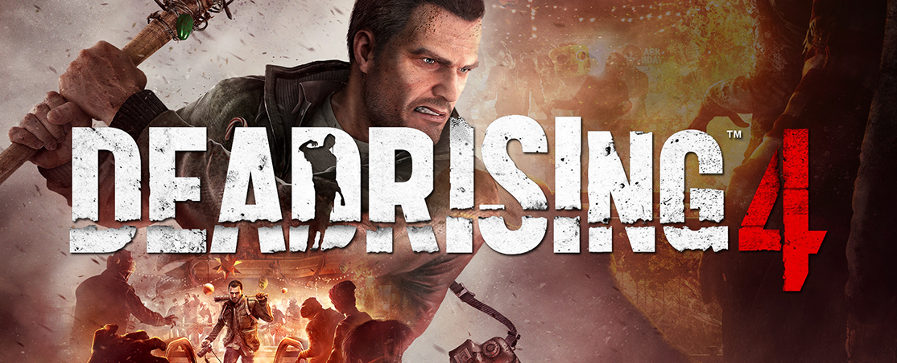
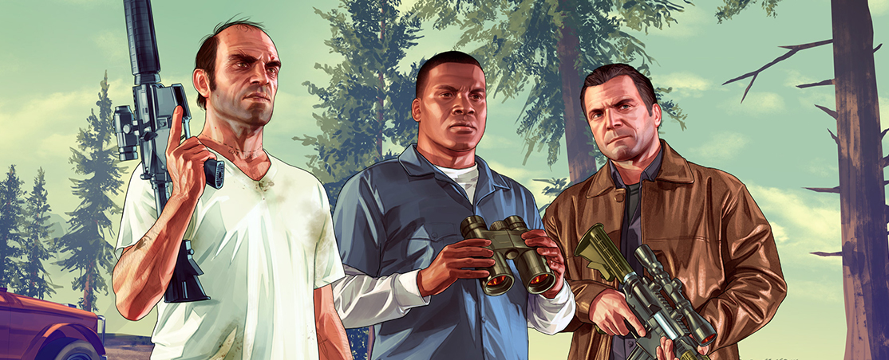
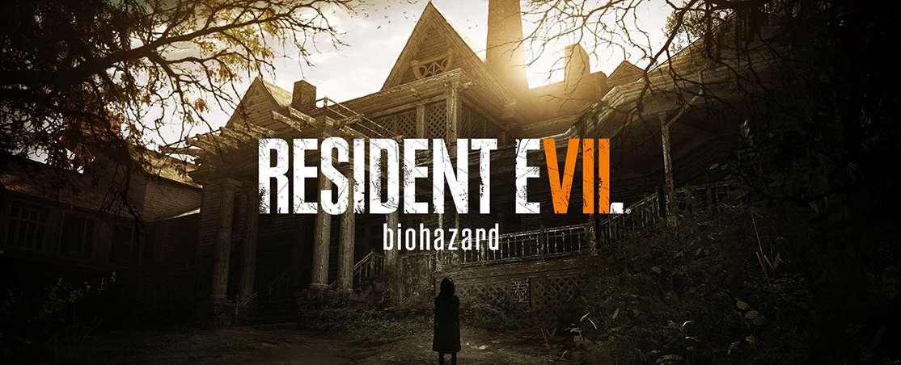

Top Reviews March 2017
Want to submit a review? Click Here!
Forza Horizon 3: I once hired a Mustang and drove it around the southern US for two weeks. I reckon it was the best thing I’ve ever done, at least where thrill-seeking is concerned. But I’d be useless in competitive racing. I know nothing of torque or differentials, and I only ever pop the hood to add screenwash. The point is that you don’t need to be a petrolhead to like a good drive, to enjoy zooming through gorgeous vistas, or appreciate the idiosyncrasies of a powerful machine when the weather gets tough. It’s clear that Playground Games understands this, and that’s why Forza Horizon is my favourite race series. It strikes a balance between the bonkers fun of an arcade racer and the in-depth nature of a racing simulation – and that balance is tweakable to suit you. For those just after a thrill ride, every car is ready to go as soon as you get in. For those who want a more difficult, more realistic driving experience, there’s an insane amount of customisation, right down to the tyre pressure.

Dead Rising 4: Since its debut a decade ago, Dead Rising has continuously evolved with each new game. It's changed settings and protagonists, added crafting and vehicles, abandoned escort missions and limited saves. In spite of all these changes, however, the core gameplay always remained intact: grab whatever's handy to kill and maim droves of zombies in a huge variety of gruesome, hilarious ways. Dead Rising 4 maintains this tradition of superficial yet entertaining mayhem by adapting ideas from every previous iteration. Intrepid photojournalist Frank West, for example, finally returns as our playable protagonist. We also revisit Willamette, Colorado, which has been completely rebuilt since the original outbreak many years prior. Tragically, it's once again the epicenter of an undead pandemic, only now its citizens are supposed to be inoculated.

Grand Theft Auto V: I have just spent a half-hour planning the perfect heist. I'm going in smart, knocking out the guards and the staff behind the delicate jewellery counters of the store with a carefully placed smoke bomb, and smashing into each cabinet with the butt of a semi-automatic rifle before making my escape on a nearby getaway bike. I'm reducing my cut so I can hire the best hacker to disable the security system, and a skilled gunman to handle crowd control. And yet, despite my best efforts, with one poorly-taken corner on my bike, it all goes wrong. I should be driving down a dank sewer tunnel, sneaking my way under the city to freedom. Instead, I'm here, mowing down wave after wave of police on the city streets, and for the first time while playing a Grand Theft Auto game, I feel immensely guilty about it.

Resident Evil Biohazard: The atmosphere in Resident Evil 7 is the strongest the series has seen in a long time, and that’s owed entirely to the eerie Dulvey plantation, to which the player character Ethan has been summoned by a cryptic email from his missing wife. If classic Resident Evil games were rooted in the zombie films of George A. Romero, this is Resident Evil in the tradition of The Texas Chainsaw Massacre, with all the gruesome imagery, dilapidated old shacks, and cannibalistic horrors that come with it. Sometimes that makes for an interesting backdrop, especially as you begin to trace the residents of the Dulvey Mansion’s descent into savagery and uncover the way it’s manifested in their domestic life. Traces of humanity aren’t hard to find behind all the locked doors: old photographs, trophies for academic achievement, a discarded football helmet.